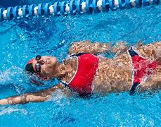
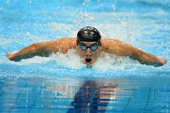
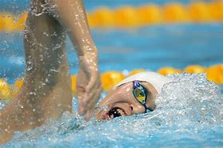

Breaststroke This is considered the oldest style there is. It consists of the athlete being with the chest facing down and makes a movement where he pushes the two arms forward at the same time and then opens them, simultaneously doing the same with the legs. The easiest way to understand it is to imagine open and close scissor Source: https://sportsregras.com/en/swimming-history-rules/
Backstroke or back crawl is one of the four swimming styles used in competitive events regulated by FINA, and the only one of these styles swum on the back. This swimming style has the advantage of easy breathing, but the disadvantage of swimmers not being able to see where they are going. It also has a different start from the other three competition swimming styles. The swimming style is similar to an upside down front crawl or freestyle. Both backstroke and front crawl are long-axis strokes. In individual medley backstroke is the second style swum; in the medley relay it is the first style swum.
The butterfly (colloquially shortened to fly[1]) is a swimming stroke swum on the chest, with both arms moving symmetrically, accompanied by the butterfly kick (also known as the "dolphin kick"). While other styles like the breaststroke, front crawl, or backstroke can be swum adequately by beginners, the butterfly is a more difficult stroke that requires good technique as well as strong muscles. It is the newest swimming style swum in competition, first swum in 1933 and originating out of the breaststroke.[2]
History of the Freestyle Stroke . The freestyle swimming stroke was thought to haveoriginated in Australia which is partially true.The stroke used to be called the “Australian Crawl”because competitive swimmers from Australia werewinning events with this stroke.It is said the freestyle was originally from the pacificislands possibly the Solomon’s
